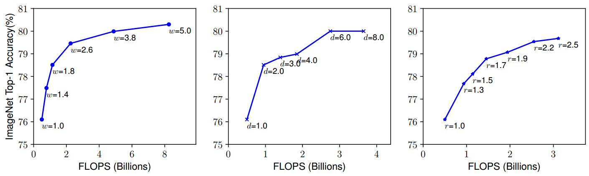
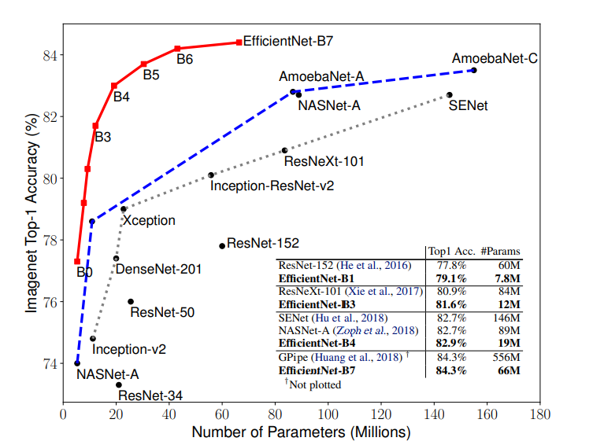
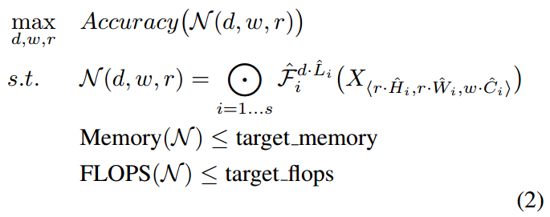
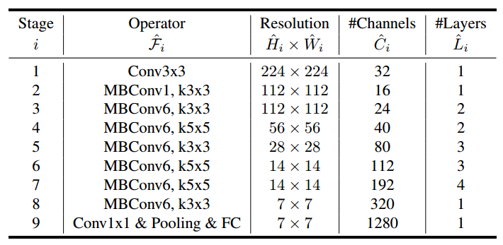

Giới thiệu
Ta biết rằng, hầu hết các mô hình CNN thường được xây dựng từ một phiên bản ban đầu (có thể là dựa theo một nguồn tài nguyên nào đó), sau đó chúng được scale dần lên để đạt được độ chính xác tốt hơn, và tất nhiên là độ phức tạp cũng tăng theo
- Ví dụ: Với ResNet thì ta có ResNet18 cho đến ResNet152, DenseNet thì DenseNet121 cho đến 201, MobileNet thì ta có siêu tham số width multiplier để điều chỉnh số channel trong từng layer và resolutiom multiplier để điều chỉnh kích thước tại các layer,…
Những cách làm đó gọi là model scaling. Tuy nhiên, ta nhận thấy rằng những thao tác model scaling trước đó chỉ tập trung vào một trong 3 yếu tố: depth - $d$ (số layer), width - $w$ (số channel) và resolution - $r$. Hơn nữa, việc điều chỉnh cũng không theo một nguyên tắc nào mà còn mang đậm tính chất ngẫu nhiên, “hên xui”, cần phải thử nghiệm rất nhiều lần mới có thể đạt được một độ chính xác mong muốn. Khi đó thì số lượng tham số của các mô hình cũng tăng chóng mặt!
Các tác giả của paper đã cho thấy kết quả thực nghiệm rằng việc điều chỉnh một trong 3 yếu tố có thể tăng độ chính xác nhưng chỉ tăng đến một mức nào đó thôi, sau đó nó sẽ bị bão hòa. Ví dụ như ở hình bên dưới:

Ta có thể đưa ra các nhận xét như sau:
- Nếu mô hình có width lớn (mỗi layer có nhiều channel) thì nó có thể học được nhiều loại đặc trưng khác nhau. Nhưng nếu mô hình không đủ sâu thì các đặc trưng đó cũng chưa phải đặc trưng ở mức high-level (nổi bật cho đối tượng)
- Nếu mô hình có depth lớn thì nó có thể học được các đặc trưng high-level nhưng nếu không có width lớn thì cũng không học được nhiều loại đặc trưng*
- Về mặt trực giác, nếu ta đưa vào mô hình một bức ảnh có resolution cao thì mô hình nên có depth lớn để có thể dần học các đặc trưng từ các feature maps có resolution lớn, đồng thời cũng vì sẽ có nhiều đặc trưng hơn nên ta cần width lớn. Do đó, model scaling nên tập trung vào việc điều chỉnh đồng thời cả 3 yếu tố $d$, $w$, $r$.
Paper công bố EfficientNet có tên là “EfficientNet: Rethinking Model Scaling for Convolutional Neural Networks”. Các tác giả tập trung vào việc đi tìm một phương pháp model scaling hiệu quả, có nguyên tắc, điều chỉnh đồng thời cả 3 yếu tố như đã đề cập. Phương pháp được giới thiệu có tên là compound scaling.
“Nguyên tắc” trong phương pháp này rất đơn giản, ta sẽ cùng điều chỉnh $d$, $w$, $r$ của toàn bộ network theo cùng một hệ số gọi là compound coefficient (kí hiệu là $\phi$).
Minh họa cho các phương pháp model scaling. (a) là mô hình ban đầu. (b)-(d) thực hiện điều chỉnh một trong ba yếu tố. (e) là phương pháp được đề xuất, nó tiến hành điều chỉnh cả ba.
Tất nhiên là model scaling chỉ phát huy tác dụng khi mà mô hình ban đầu là đủ tốt. Từ phương pháp compound scaling, các tác giả đã áp dụng nó cho ResNet, MobileNet để chứng tỏ độ hiệu quả của phương pháp. Sau đó, một họ mô hình mới được đề xuất là EfficientNet, vớ 8 phiên bản từ B0 đến B7 với độ phức tạp và độ chính xác tăng dần trên tập ImageNet. EfficientNet-B7 đã trở thành SOTA (state-of-the-art) với độ phức tạp nhỏ hơn rất nhiều lần so với mô hình SOTA trước đó.

Bài toán model scaling
Giả sử conv layer thứ $i$ được định nghĩa là hàm số $Y_i = F_i(X_i)$, với input $X_i$ có shape là $\left (H_i, W_i, C_i \right)$. Khi đó, một CNN $N$ có thể được biểu diễn là
$$ N = F_k \bigodot F_{k-1} \bigodot \cdots F_1(X_1) = \bigodot_{j=1,…,k} F_j(X_1) $$
Thông thường, các mạng CNN thường được xây dựng theo kiểu gồm nhiều giai đoạn, mỗi giai đoạn là sự lặp lại các block có cùng dạng cấu trúc, chỉ khác nhau một số chi tiết như số layer trong block, kích thước của filter,… Ví dụ, ResNet được xây dựng dựa trên các residual block, MobileNet thì là các depthwise separable block,… Do đó, ta có thể viết lại $N$ thành
$$ N = \bigodot_{i=1,…,s} F_i ^ {L_i}(X_{(H_i, W_i, C_i}) $$
, với $F_i$ là layer được lặp lại $L_i$ lần trong giai đoạn thứ $i$, với input là $X$ có shape $(H_i, W_i, C_i)$.
Bài toán model scaling sẽ cố định layer $F_i$ và đi điều chỉnh các giá trị $L_i, H_i, W_i, C_i$, sao cho mô hình thỏa mãn các ràng buộc về tài nguyên và đạt độ chính xác cao nhất có thể.
- Điều chỉnh $L_i$ $\Leftrightarrow$ Điều chỉnh depth
- Điều chỉnh $C_i$ $\Leftrightarrow$ Điều chỉnh width
- Đều chỉnh $H_i, W_i$ $\Leftrightarrow$ Điều chỉnh resolution
Để giảm không gian tìm kiếm, ta sẽ điều chỉnh các giá trị trên của toàn bộ layer trong mô hình theo cùng một tỉ lệ. Khi đó, bài toán của ta là bài toán tối ưu như sau:

, với $d, w, r$ là hệ số để điều chỉnh depth, width, resolution; $\hat{F_i}, \hat{L_i}, \hat{H_i}, \hat{W_i}, \hat{C_i}$ là các giá trị ban đầu của mô hình baseline.
Phương pháp compound scaling
Phương pháp này sử dụng compound coefficient $\phi$ để điều chỉnh depth, width, resolution theo nguyên tắc như sau:
-
Với mô hình baseline ban đầu, ta thực hiện grid search để tìm ra bộ 3 giá trị tỉ lệ $(d, w, r) = (\alpha, \beta, \gamma)$ tốt nhất có thể, sao cho
$$ \alpha \cdot \beta^2 \cdot \gamma^2 \approx 2 \text{ và } \alpha \geq 1, \beta \geq 1, \gamma \geq 1 $$
-
Sau đó, ta sẽ scale mô hình lên theo hệ số $\phi$ với
$$ d = \alpha ^ \phi, ; w = \beta^\phi, ; r = \gamma^\phi $$
Về mặt trực giác, ta có thể xem $\phi$ như là cách mà chúng ta cho biết lượng tài nguyên dành cho model scaling là bao nhiêu, còn các giá trị $\alpha, \beta, \gamma$ là cách chúng ta phân phối tài nguyên đó cho depth, width và resolution. Giải thích cho các ràng buộc cho $\alpha, \beta, \gamma$ được trình bày như sau:
- Tất nhiên là để thực hiện được việc scale mô hình lên thì giá trị của chúng phải không nhỏ hơn 1
- Ngoài ra, một phép toán convolution sẽ có độ phức tạp tỉ lệ thuận với $d, w^2, r^2$. Do đó, nếu ta scale model lên theo hệ số $\phi$ thì độ phức tạp sẽ tăng lên một lượng bằng $(\alpha \cdot \beta^2 \cdot \gamma^2)^\phi$. Các tác giả mong muốn độ phức tạp tăng khoảng $2^\phi$, do đó ta có ràng buộc $\alpha \cdot \beta^2 \cdot \gamma^2 \approx 2$.
Họ mô hình EfficientNet
Neural architecture search
EfficientNet là một họ các mô hình rất đặc biệt:
-
Thứ nhất, chúng được xây dựng bằng “máy” 😀 Vào năm 2017, một ma thuật đã được công bố trong paper “Neural architecture search with reinforcement learning” của chính tác giả Quoc V. Le, nó giúp chúng ta xây một kiến trúc phù hợp nhất có thể dựa theo độ chính xác, độ phức tạp mà chúng ta yêu cầu.
-
Với họ EfficientNet, các tác giả tập trung vào việc giới hạn độ phức tạp (cụ thể là FLOPS). Mục tiêu tối ưu của reinforcement learning là
$$ ACC(m) \times \left ( \frac{FLOPS(m)}{T} \right )^w $$
, với $m$ là mô hình, $ACC$ và $FLOPS$ là độ chính xác và độ phức tạp, $T$ là FLOPS mong muốn và nó bằng $400 \times 10^6$, $w=-0.07$ là hằng số điều chỉnh trade-off giữa $ACC$ và $FLOPS$
-
-
Thứ hai, từ một mô hình ban đầu là EfficientNet-B0, ta tiến hành scale theo 2 bước:
- Bước 1: Cố định $\phi = 1$, giả sử lượng tài nguyên mà ta có thể sử dụng là nhiều gấp đôi hiện tại. Khi đó, thực hiện grid search để tìm các giá trị $(d, w, r) = (\alpha, \beta, \gamma)$ tốt nhất
- Bước 2: Từ các giá trị $(d, w, r) = (\alpha, \beta, \gamma)$ tìm được, tiến hành scale theo các giá trị $\phi$ lớn hơn để có được các phiên bản B1-B7.
Ở đây, ta hoàn toàn có thể tăng $\phi$ lên rồi lại grid search nhưng lúc này chi phí thực hiện là rất lớn. Do đó, các tác giả chỉ grid search một lần rồi sau đó chỉ cần tăng $\phi$.
Kiến trúc mô hình
Đầu tiên, tổng quan kiến trúc của EfficientNet-B0 như sau:

- Trong đó:
- MBConv chính là inverted residual block trong MobileNetV2, cùng với một số cải tiến như trong paper “Squeeze-and-excitation networks”
Các mô hình EfficientNet-B1 cho đến B7 chính là kết quả của việc áp dụng compound scaling lên EfficientNet-B0.
Tài liệu tham khảo
- Paper EfficientNet: https://arxiv.org/abs/1905.11946